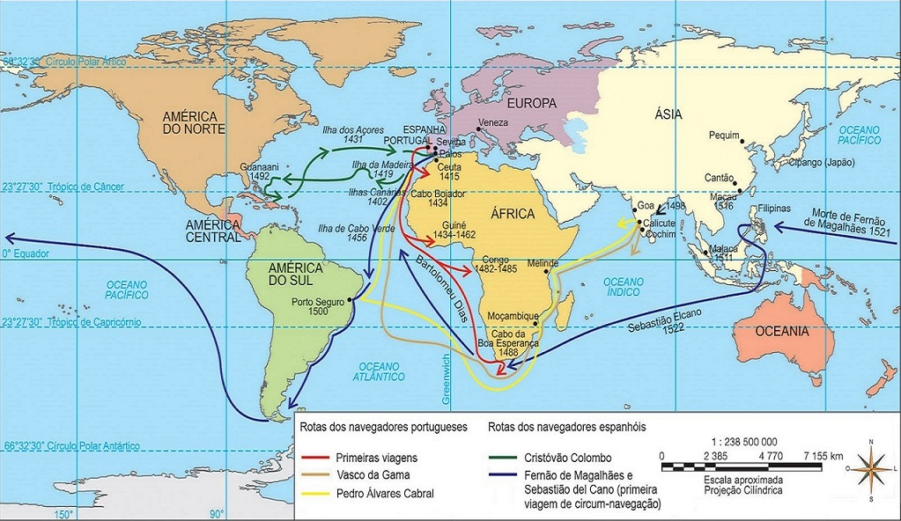
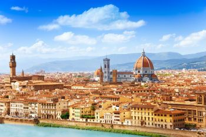
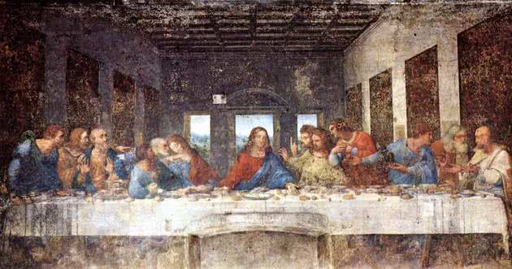
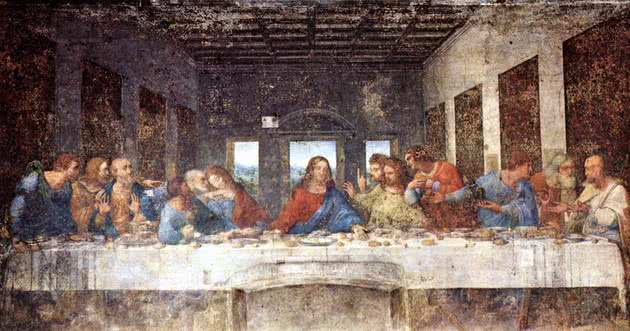
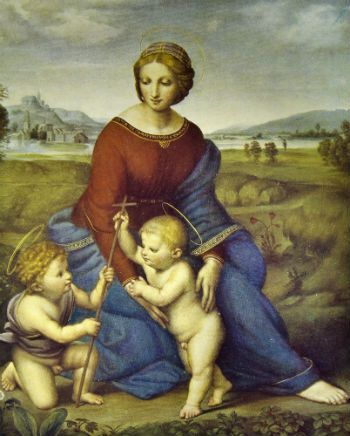
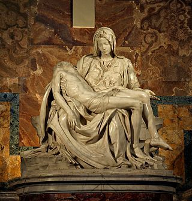

A Idade Moderna é o momento da história do século XV até XVIII e que está localizado temporalmente entre a Idade Média e a Idade Contemporânea.
Podemos afirmar seguramente que esse período foi considerado de intensas mudanças.
Caracterizou-se por uma fase de grandes transformações, revoluções e mudanças na mentalidade ocidental, mudanças essas de ordem econômica, científica, social e religiosa, que balizaram o sistema capitalista.
As divergências conceituais quanto à origem e evolução daquele sistema (o capitalista), os historiadores apontam a conquista turca de Constantinopla ou a viagem de Vasco da Gama às Índias. Ou ainda, a viagem de Cristóvão Colombo às Américas como o marco dessa era.
De outra forma, poucos contestam o final desse período como sendo o dia 14 de julho de 1789, com o advento da Revolução Francesa.
De todo modo, a Idade Moderna representa a época quando encurtaram-se as distâncias, após os europeus se lançarem por mares nunca antes navegados, explorando e desvendando a natureza.
As primeiras Grandes Navegações foram realizadas entre os séculos XV e XVI. Os pioneiros na expansão marítima foram os portugueses e os espanhóis, seguidos pelos ingleses, franceses e holandeses.
Fatores que levaram os europeus a realizarem as primeiras Grandes Navegações:
• A procura de mercados produtores agrícolas na África e na Ásia para suprir as necessidades da crescente população europeia.
• A procura de novos mercados consumidores de produtos manufaturados na Europa.
• Falta de metais preciosos na Europa para a cunhagem de moedas.
• O aprimoramento das técnicas de navegação.
• A necessidade de se descobrir um novo caminho marítimo para as Índias.
A burguesia mercantil buscava novos caminhos para a Índia, para quebrar o monopólio que as cidades italianas, principalmente Veneza e Gênova, exerciam sobre o comércio de especiarias vindas daquela região, e para evitar o confronto armado com essas cidades no Mediterrâneo.
A aliança entre rei e burguesia também contribuiu de maneira decisiva para a expansão comercial e marítima. Juntos, rei e burguesia patrocinaram e financiaram expedições para a África, Ásia e a América.
Portugal foi o pioneiro na realização de grandes viagens. Voltado para o Atlântico desfrutava de posição privilegiada.
No início do século XV, Portugal tornou-se o centro de estudos de navegação, com o estímulo do infante D. Henrique, o navegador, que reunia em sua residência, em Sagres, Algarve, navegadores, cosmógrafos, cartógrafos, mercadores e aventureiros.
As Grandes Navegações Portuguesas
• 1415 – chega à ilha de Ceuta, no norte da África.
• 1419 – ocupa o arquipélago dos Açores.
• 1434 – dobra o cabo do bojador.
• 1444 – descobre o arquipélago de Cabo Verde.
• 1488 – Bartolomeu Dias dobra o Cabo da Boa Esperança.
• 1498 – Vasco da Gama atinge Calicute, na costa oeste da Índia.
• 1500 – Pedro Álvares Cabral oficializa a posse sobre o Brasil e segue depois rumo à Ásia, objetivo principal da esquadra.
As Grandes Navegações Espanholas
O segundo país europeu a se aventurar nas Grandes Navegações foi a Espanha e mesmo assim, quase oitenta anos depois de Portugal. As expedições contaram com o apoio de Isabel de Castela e Fernando de Aragão.
Em sua primeira viagem, Cristóvão Colombo desembarcou nas Bahamas, acreditando ter alcançado as Índias, e morreu acreditando nisso.
Somente em 1504 desfez-se o engano, quando o navegador Américo Vespúcio confirmou tratar-se de um novo continente.
• 1492 – Cristóvão Colombo descobre a América.
• 1499 – Alonso Ojeda chega à Venezuela.
• 1500 – Vicente Pinzón chega ao Brasil, no Amazonas.
• 1511 – Diogo Velasquez chega Cuba.
• 1512 – Ponce de León chega à Flórida.
• 1513 – Vasco Nunez alcança o Oceano Pacífico.
• 1519 – Fernão de Magalhães e Sebastião del Cano partem para a primeira viagem de circum-navegação.
• 1519 – Fernão Cortez chega ao México.
• 1531 – Francisco Pizarro conquista o Peru.
• 1537 – João Ayolas chega ao Paraguai.
• 1541 – Francisco Orellana explora o rio Amazonas.
As navegações inglesas, francesas e holandesas na América
Depois de algumas expedições de reconhecimento geográfico ao longo do litoral norte-americano, os ingleses só começaram a colonizar a América do Norte no final do século XVI.
Os franceses, jamais aceitaram a divisão da América, pelo Tratado de Tordesilhas, entre Espanha e Portugal e realizou diversas viagens estimulando a pirataria, principalmente nas costas brasileiras. As investidas pelo Caribe e pelas costas norte-americanas resultaram na posse do Haiti, do Canadá e da Louisiana.
Os holandeses chegaram à América, já no século XVII, e fundaram Nova Amsterdã (atual Nova York), invadiram por duas vezes o Brasil (Pernambuco e Bahia) conquistaram o atual Suriname, a região do Forte Orange (Albany) e Curaçao.

Após o desenvolvimento comercial a partir do século XV, o aumento da população, o crescimento das cidades e desenvolvimento das manufaturas, foi natural a superação da Idade Média.
Assim, foi se estruturando um sistema comercial que está no cerne do Capitalismo: o Mercantilismo.
Na Idade Moderna (XV a XVIII), ele se firmou como política econômica nacional e atingiu o seu desenvolvimento.
Ao passo que as monarquias europeias foram se firmando como Estados modernos, os reis recebiam o apoio da burguesia comercial, que buscava a expansão do comércio para fora das fronteiras do país.
Além disso, o Estado lhe concedia o monopólio das atividades mercantis e defendia o comércio nacional e colonial da interferência de grupos estrangeiros.
Principais Características do Mercantilismo
Embora as práticas e ideias não tenham sido aplicados de maneira homogênea, o mercantilismo apresentou alguns elementos comuns nas diferentes nações europeias:
Controle estatal da economia:
os reis com o apoio da burguesia mercantil foram assumindo o controle da economia nacional, visando fortalecer ainda mais o poder central e obter os recursos necessários para expandir o comércio. Dessa forma o controle estatal da economia tornou-se a base do mercantilismo.
Balança comercial favorável:
consistia na ideia de que a riqueza de uma nação estava associada a sua capacidade de exportar mais do que importar. Para que as exportações superassem sempre as importações (superávit), era necessário que o Estado se ocupasse com o aumento da produção e com a busca de mercados externos para a venda dos seus produtos.
Moopólio:
controladores da economia, os governos interessados numa rápida acumulação de capital, estabeleceram monopólio sobre as atividades mercantis e manufatureiras, tanto na metrópole como nas colônias. Donos do monopólio, o Estado o transferia para a burguesia metropolitana por pagamento em dinheiro. A burguesia favorecida pela concessão exclusiva comprava pelo preço mais baixo o que os colonos produziam e vendiam pelo preço mais alto tudo o que os colonos necessitavam. Dessa forma, a economia colonial funcionava como um complemento da economia da metrópole.
Protecionismo:
era realizado através de barreiras alfandegárias, com o aumento das tarifas, que elevava os preços dos produtos importados, e também através da proibição de se exportar matérias-primas que favorecessem o crescimento industrial do país concorrente.
Metalismo:
os mercantilistas defendiam a ideia de que a riqueza de um país era medida pela quantidade de ouro e prata que possuíssem. Na prática essa ideia provou não ser verdadeira.
Tipos de Mercantilismo
A Espanha adotou o mercantilismo metalista e enriqueceu com o ouro e a prata, explorados no continente americano, mas como não desenvolveu o comércio, a agricultura e a indústria, passou a importar produtos pagos com ouro e prata.
Como as importações superavam as exportações (déficit), a economia espanhola no século XVII, entrou numa crise que durou um longo período.
Na França o mercantilismo estava voltado para o desenvolvimento de manufaturas de luxo para atender ao mercado espanhol e procurou expandir suas companhias de comércio, bem como a construção naval.
Essa política econômica ficou conhecida como mercantilismo industrial ou colbertismo, referência ao ministro Colbert, quem mais a incentivou.
Portugal foi o país que demonstrou maior flexibilidade na aplicação do mercantilismo. No século XVI, com a descoberta do caminho marítimo para as Índias, pois em prática o mercantilismo comercial, comprando e revendendo mercadorias do Oriente.
Com a exploração das terras americanas, se tornou o pioneiro do mercantilismo de plantagem, baseado na produção destinada ao mercado internacional.
No século XVIII, com o ouro de Minas Gerais, praticou o mercantilismo metalista. Com a crise do ouro, surgiu o mercantilismo industrial, com a produção de artigos destinados ao abastecimento do mercado colonial.
Em termos políticos, devemos ressaltar que Absolutismo era forma de governo estabelecida.
O Absolutismo foi o sistema político e administrativo dos países europeus, durante o período conhecido como Antigo Regime (séculos XVI ao XVIII ). Em suma, o soberano centralizava todos os poderes do estado em suas mãos e os utilizava a revelia de toda sociedade.
Para todos os efeitos, os monarcas obtiveram o apoio da nobreza e da burguesia mediante a padronização das políticas fiscais e monetárias, ao mesmo tempo em que protegeria as propriedades das revoltas camponesas que ameaçavam a nobreza e o clero.
Os reis detinham o monopólio da violência para reprimir qualquer pessoa ou movimento social que contrariasse a vontade da realeza.
Os principais reinos absolutistas foram Espanha, França e Inglaterra: na Espanha, a unificação política ocorrera em 1469 por meio do casamento do rei Fernando de Aragão e a rainha Isabel de Castela.
Na França, durante a dinastia Valois (século XVI), consolidou-se o poder absolutista, o qual atinge seu ápice com o rei Luís XIV, o "Rei Sol" (1643 e 1715).
Já na Inglaterra, o absolutismo de Henrique VIII (1509), também foi apoiado pela burguesia, a qual consentiu no fortalecimento dos poderes monárquicos em detrimento do poder parlamentar.
O principal teórico do absolutismo fora Nicolau Maquiavel (1469-1527), defensor do Estado e dos soberanos, os quais deveriam lançar mãos de todos os meios para garantir a o sucesso e a continuidade do seu poder.
Leitura recomendada: O Príncipe - Nicolau Maquiavel.
Nessa obra, ele demonstra formas de governo aos príncipes para que eles pudessem manter-se soberanos no seu respectivos reinos.
Vale lembrar que em aproximadamente quatro séculos, os monarcas europeus observaram seu poder ruir por meio de várias revoluções liberais, até que a Revolução Francesa inicia o processo que derrubará definitivamente o Antigo Regime.
No tocante à Sociedade, esse foi um período caracterizado por significativas transformações e avanços tecnológicos que possibilitaram a globalização iniciada na Idade Moderna.
Podemos citar as "Grandes Navegações", que possibilitou, graças a descobertas e avanços já referidos, tal como o aperfeiçoamento do astrolábio e da bússola, de barcos mais resistentes para viagens marítimas e, mais adiante, do advento das máquinas à vapor.
Essas transformações possibilitaram um intenso acúmulo de capitais que permitiram ao continente europeu lançar-se na frente pela conquista.
Vale citar ainda que, o século XVIII também ficou marcado como sendo o ápice do espírito investigativo dos cientistas e filósofos iluministas, os quais, para além de inventar diversas máquinas, criarão muitas teorias sociais e científicas.
Além do Iluminismo, a Reforma Religiosa, liderada por Martinho Lutero, também fora uma grande revolução social, dando um duro golpe contra igreja católica, a qual reagiu com a Contrarreforma, um movimento para debelar o progresso da reforma religiosa.
Destarte, temos que destacar que os movimentos sociais como o Renascimento comercial e artístico, o Iluminismo e a Reforma Protestante mudaram o imaginário social daquele período e suas transformações são sentidas até os dias de hoje.
O Renascimento foi um movimento cultural, econômico e político que surgiu na Itália do século XIV, se consolidou no século XV e se estendeu até o século XVII por toda a Europa.
Inspirado nos valores da Antiguidade Clássica e gerado pelas modificações estruturais da sociedade, resultou na reformulação total da vida medieval, dando início à Idade Moderna.
Origem do Renascimento
O Renascimento originou-se na Itália, devido ao florescimento de cidades como Veneza, Gênova, Florença, Roma e outras
Elas enriqueceram com o desenvolvimento do comércio no Mediterrâneo dando origem a uma rica burguesia mercantil que, em seu processo de afirmação social, se dedicou às artes, juntamente com alguns príncipes e papas.

Florença, a cidade italiana considerada "Berço do Renascimento"
Cultura Renascentista
• Racionalismo - os renascentistas estavam convictos de que a razão era o único caminho para se chegar ao conhecimento, e que tudo podia ser explicado pela razão e pela ciência.
• Experimentalismo - para eles, todo conhecimento deveria ser demonstrado através da experiência científica.
• Individualismo - nasceu da necessidade do homem conhecer a si próprio, buscando afirmar a sua própria personalidade, mostrar seus talentos, atingir a fama e satisfazer suas ambições, através da concepção de que o direito individual estava acima do direito coletivo.
• Antropocentrismo - colocando o homem como a suprema criação de Deus e como centro do universo.
O humanismo foi um movimento de glorificação do homem e da natureza humana, que surgiu na Itália em meados do século XIV.
O homem, a obra mais perfeita do Criador, era capaz de compreender, modificar e até dominar a natureza. O pensamento humanista provocou uma reforma no ensino das universidades, com a introdução de disciplinas como poesia, história e filosofia.
Os humanistas buscavam interpretar o cristianismo, utilizando escritos de autores da Antiguidade, como Platão.
O estudo dos textos antigos despertou o gosto pela pesquisa histórica e pelo conhecimento das línguas clássicas como o latim e o grego.
A partir do século XIV, ao mesmo tempo que os renascentistas se dedicavam ao estudo das línguas clássicas, diferentes dialetos davam origem às línguas nacionais.
Gestado nessa época, o humanismo se tornou referência para muitos pensadores nos séculos seguintes, inclusive para os filósofos iluministas do século XVIII.
Renascimento Literário
• Dante Alighieri: escritor italiano autor do grande poema "Divina Comédia".
• Maquiavel: como citado anteriormente, autor de "O Príncipe", obra precursora da ciência política onde o autor dá conselhos aos governadores da época.
• Shakespeare: considerado um dos maiores dramaturgos de todos os tempos. Abordou em sua obra os conflitos humanos nas mais diversas dimensões: pessoais, sociais, políticas. Escreveu comédias e tragédias, como "Romeu e Julieta", "Macbeth", "A Megera Domada", "Otelo" e várias outras.
• Miguel de Cervantes: autor espanhol da obra "Dom Quixote", uma crítica contundente da cavalaria medieval.
• Luís de Camões: teve destaque na literatura renascentista em Portugal, sendo autor do grande poema épico "Os Lusíadas".
Renascimento Artístico
No século XVI, o principal centro de arte renascentista passou a ser Roma. Os principais artistas plásticos do renascimento foram:
Leonardo Da Vinci:
Matemático, físico, anatomista, inventor, arquiteto, escultor e pintor, ele foi um gênio absoluto. A Monalisa e A Última Ceia são suas obras primas.
 

Monalisa e A Última Ceia
Rafael Sanzio:
foi um mestre da pintura, famoso pela doçura de suas madonas. A Madona do Prado foi considerada a mais perfeita.

Madona do Prado
Michelangelo:
artista italiano cuja obra foi marcada pelo humanismo. Além de pintor foi um dos maiores escultores do Renascimento. Entre suas obras destacam-se a Pietá, David, O teto da Capela Sistina, A Criação de Adão e O Juízo Final.

Pietá
Renascimento Científico
O Renascimento foi marcado por importantes descobertas científicas, notadamente nos campos da astronomia, da física, da medicina, da matemática e da geografia.
O polonês Nicolau Copérnico, que negou a teoria geocêntrica defendida pela Igreja, ao afirmar que "a terra não é o centro do universo, mas simplesmente um planeta que gira em torno do Sol".
Galileu Galilei descobriu os anéis de Saturno, as manchas solares, os satélites de Júpiter. Perseguido e ameaçado pela Igreja, Galileu foi obrigado a negar publicamente suas ideias e descobertas.
Na medicina os conhecimentos avançaram com trabalhos e experiências sobre circulação sanguínea, métodos de cauterização e princípios gerais de anatomia.